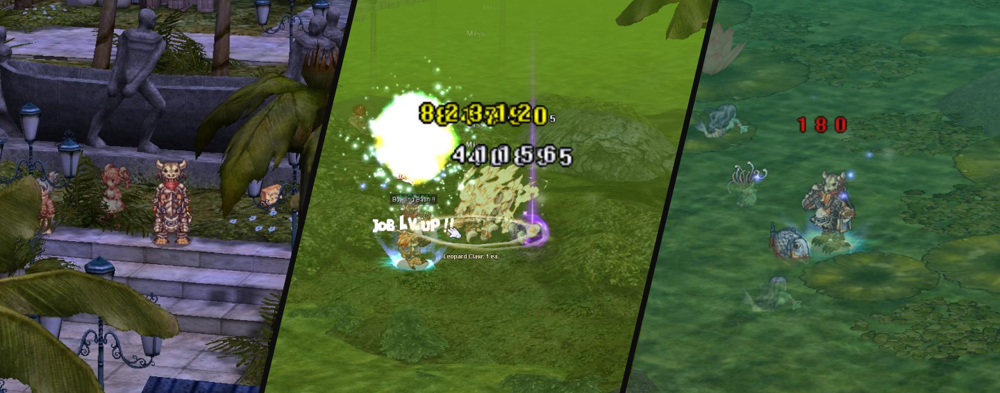
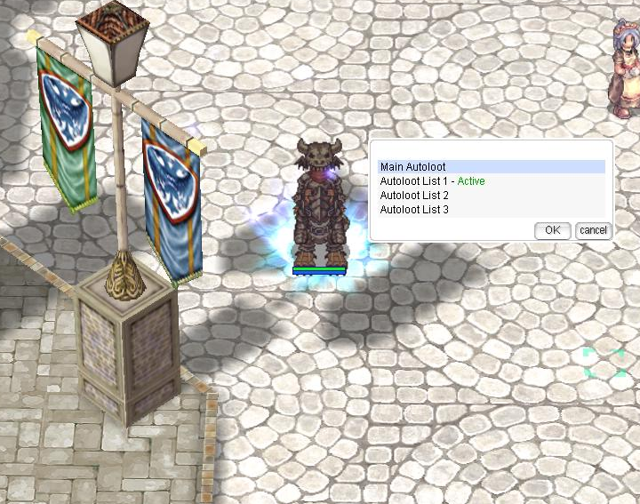
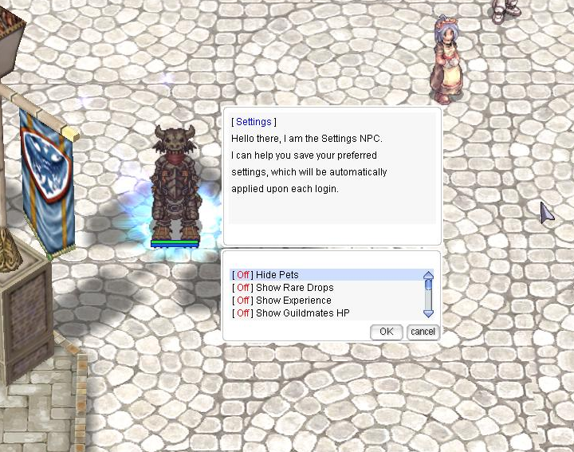
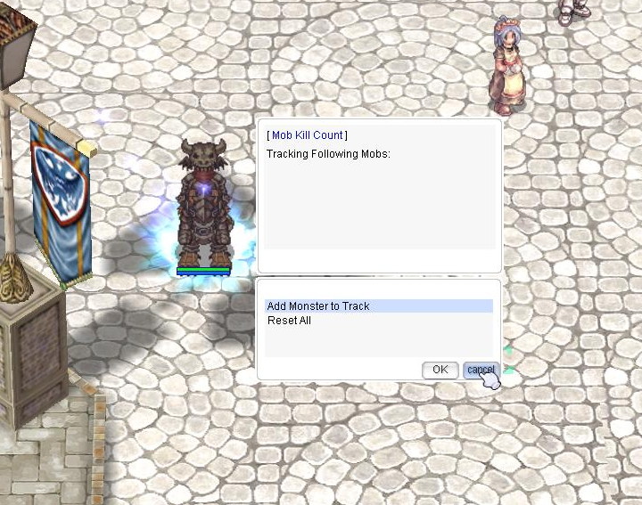

📝 Patch Notes - 31 January, 2025¶
🌴 Brasilis and Brasilis Dungeon¶

- New adventures await in Brasilis! A couple of cozy quests, Brasilis Fields, new monsters, and the Brasilis Dungeon are now available.
📜 Available Quests in Brasilis¶
- 🐶 Lost Puppies Quest – Help Angelo find lost puppies around Brasilis.
- 🌊 Suspicious Beach Quest – Capture a Strange Hydra with Lucia's help.
- 🍬 Guarana Candy Quest – Gather Guarana to craft a special candy.
- 🌺 Water Lily Quest – Retrieve a rare Water Lily for a unique headgear.
- 👻 Brasilis Dungeon Access – Solve a ghost mystery to unlock the dungeon.
- 🧜 Iara Buff Quest – Defeat Iara and earn a powerful buff from Anori.
⚙️ New Command: @lootconfig UI for Easy Autoloot Customization¶

- Toggle Autoloot – Set a drop rate & enable/disable.
- Ignore Items – Exclude unwanted loot.
- Loot Groups – Create up to 3 custom loot groups.
- Quick Setup – Manage loot easily via UI.
- Saves Settings – Preferences reload automatically on login.
🛠️ How to Use @lootconfig¶
- Type
@lootconfigto open the UI. - Choose Main Autoloot or Custom Groups.
- Enable/Disable Autoloot and set a drop rate.
- Add/Remove items from lists.
- Select and manage loot groups.
- Changes apply instantly and save automatically.
Important Change
The @autoloot command has been removed. Use @lootconfig instead.
🔄 Login Settings Rework¶

@loginsettingsis now@settings, offering a streamlined UI for saving preferences like autoloot, chat channels, and visibility settings.@settingssyncs with in-game commands, so you don't need to use the menu separately.
Known Issue
@hidepet and @ignorebg require a reset upon relog. A fix is in progress.
🎯 Killcount Command Adjustments (@killcount)¶

- The
@killcountcommand has been rewritten and now includes a UI-based tracking system. - Now allows tracking of multiple monsters (default:
5).
Tracking Mechanics
Removing a monster from the tracking list does not reset its kill count.
🏰 WoE Changes¶
- WoE consumables no longer work on Pre-Trans WoE maps.
- Kafra Card can no longer be used in Pre-Trans WoE.
⚔️ PvP-Related Changes¶
- Removed the auto-warp function that returned players to their save point after the second death on PvP maps.
⚡ Battlegrounds Updates¶
- Edited descriptions for weight errors on multiple BG items.
- Added BG Elemental Converters to the BG Shop.
- Removed restrictions on opening BG boxes outside BG maps.
- Players are now fully dispelled upon entering and leaving BG.
- Added a 60-second cooldown when entering and then leaving the BG queue.
- Fixed multiple BG-related errors.
🏆 Instance Adjustments¶
- Horror Toy Factory item adjustments.
- Fixed an issue preventing instance load/party kick upon entry error of one or more party members.
- Added
Hurt MindandKind Heartto Horror Toy Factory Reward Boxes. - LUK Temporal Boots buffed:
1% → 5%per 3 refines Crit Damage increase. - Old Parasol added to the HTF Shop for 1,200 Bloody Coins.
- Reduced slot requirement for Temporal Crystals from
2,500 → 1,500per attempt. - Fixed NPC verbiage from 25% → 50% when slotting Temporal Boots.
- Fixed spawn rates and mob amounts in Old Glast Heim.
- Adjusted Base/Job EXP for Old Glast Heim mobs.
🎮 Other Gameplay Adjustments¶
- BG Box of Sunlight cooldown reduced from
2 minutes → 1 minute. - Fixed an issue preventing rogues from utilizing plagiarized skills outside of Pre-Trans WoE.
- Kill-steal prevention added to Bow and Sword Guardians.
- Fixes applied to: Poring Minis, Maya Purple, and Duneyrr.
- Kafra warp option added from Prontera to Izlude.
- Fixed skill description SP usage on the client side.
- @hidepet command fixed and adjusted.
- Black Mushrooms during Mushroom Event can no longer be KS’d.
- Fresh Fish and Ice Cream added to main tool dealers.
- Kafra warp from Izlude → Prontera added.
Fame Points Adjustment
Fame points have been adjusted due to inactivity or member bans. These changes affect class rankings:
- 6+ months inactive →
0fame points. - 3-6 months inactive →
50%reduction. - Starting 1 March, a collective
10%reduction per month will occur on all members' fame points to prevent inactive players from holding ranking spots.
MVP Rankings Unaffected
This does not affect MVP kill board numbers.
🌟 We Need Your Support!¶
💬 If you enjoy the server, consider leaving a review on RMS!
Your support helps us grow and maintain an active community. ❤️
📢 Leave a review here: Rate our server on RMS!
🎉 Thank you for your continued support, and we hope you enjoy the new content! 🚀